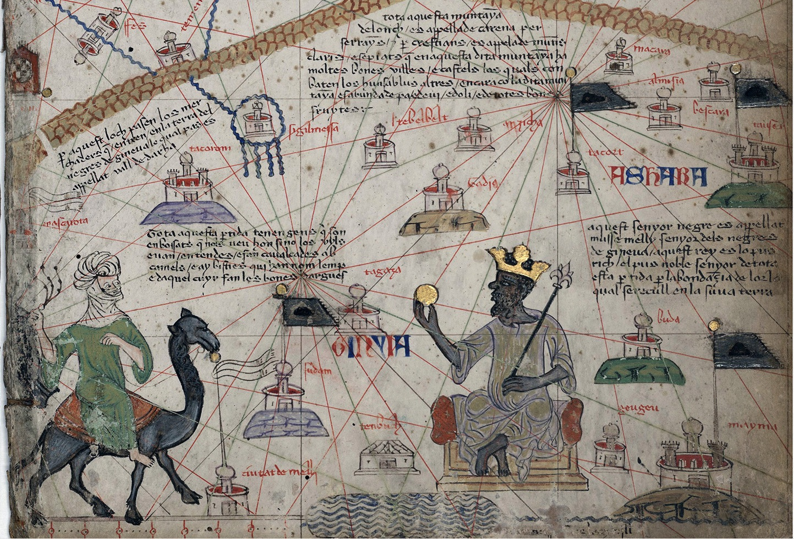
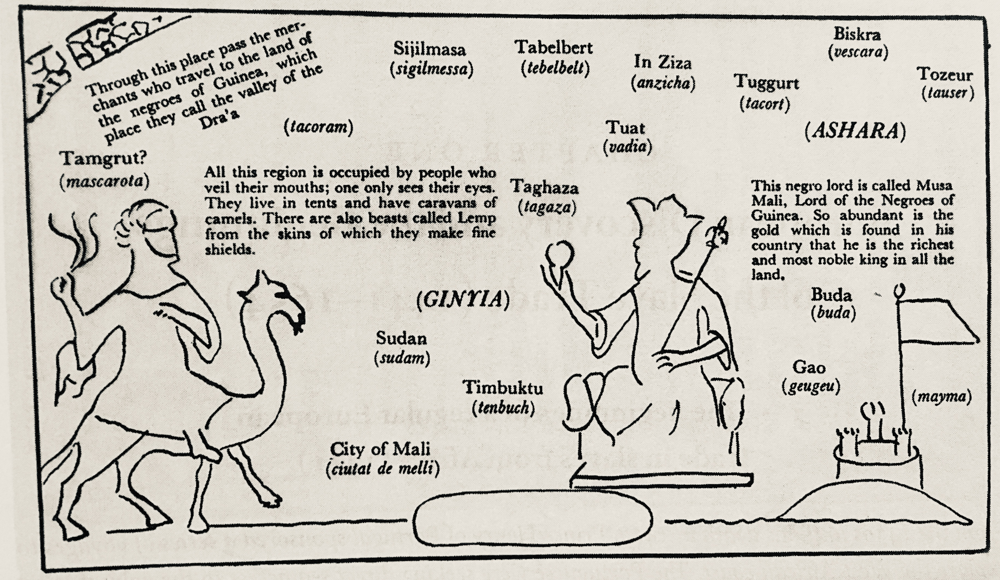

Interactive Papers
Abraham Cresques,Catalan Atlas (ca. 1375), Original from Bibliothèque Nationale de Paris , 645 mm x 3000 mm.
 (from chapter 1 'Imagery of Eurocentrism' including notes)

The well-known Catalan atlas of Charles V, drawn by Abraham Cresques of Majorca in about 1375, shows in the middle of the desert a veiled man on a camel riding towards a monarch seated on a throne. The latter, in royal robes and a crown, holds a sceptre in one hand and in the other a nugget of gold which he is offering to the rider. 'This negro lord', reads the inscription, 'is called Musa Mali, Lord of the Negroes of Guinea. So abundant is the gold which is found in his country that he is the richest and most noble king in all the land.' The fame of the great negro ruler persisted for some time and many believed him to be no less a personage than the mythical potentate Prester John.
Edward William Bovill, Golden Trade of the Moors: West African Kingdoms in the Fourteenth Century (London: Oxford University Press, 1958), 90
[Translation of Latin Text]
[part 1] [part 2]
aquest senyor negre es appellat musse melly, senyor dels negres de Gineva. Aquest rey es lo pus rich el
pus noble senyor de tota esta pertida per labondançia de lor lo qual se recull en la suua terra
This black gentleman is called Mansa Musa and is the ruler of the negroes of Guinea. This king is the
richest and noblest gentleman in all the region on account of the abundance of gold that is obtained from
his land.
1 / 1
(Q) Is he somehow related to the epics that we've read before?

Through this place pass the merchants who travel to the land of hte negroes of Guinea, which place they call the vally of the Dra’a
Sijilmasa, Tabelbert, In Ziza, Tuggurt, Biskra, Tozeur
ASHARA
All this region is occupied by people who veil their mouths; one only sees their eyes. They live in tents and have caravans of camels. There are also beasts called Lemp from the skins of which they make fine shields.
GINYIA
Timbuktu
City of Mali
This negro lord is called Musa Mali, Lord of the Negroes of Guinea. So abundant is the gold which is found in his country that he is the richest and most noble king in all the land.
Through this place pass the merchants who travel to the land of hte negroes of Guinea, which place they call the vally of the Dra’a
Sijilmasa, Tabelbert, In Ziza, Tuggurt, Biskra, Tozeur
ASHARA
All this region is occupied by people who veil their mouths; one only sees their eyes. They live in tents and have caravans of camels. There are also beasts called Lemp from the skins of which they make fine shields.
GINYIA
Timbuktu
City of Mali
This negro lord is called Musa Mali, Lord of the Negroes of Guinea. So abundant is the gold which is found in his country that he is the richest and most noble king in all the land.
Europe’s Africa
There have been so many changes in Europe’s images of Africa over the course of time that it is worthwhile to sketch some of these developments, if only from a bird’s-eye view. It gives us an insight into the historical depth of images as well as their situation in a wider historical context.
The earliest images of black Africans are significant in the genealogy of European images we encounter in ancient Egypt. The oldest representations of black Africans, dating from 2500 BC, show them well integrated into society and intermarrying. They indicate also that black beauty is appreciated. Black as a colour is valued positively in Egyptian culture, as the colour of fertility (dark as the silt of the Nile). Gradually the imagery changes in a way which presumably correlates with the changing relations between Egypt and the Nubian kingdoms in the south, Kush, Moroë and Napata. After 2200 BC black Africans are especially represented as warriors. During the 11th dynasty Nubian archers formed part of the Egyptian army. When tensions along the southern border increase we see them depicted as enemies and during the 18th dynasty, after the conquest of Kush, as defeated enemies, bent under the foot of the Pharaoh. In this period representations of Nubians, mostly young, as servants and entertainers, especially dancers, come to the fore.
Subsequently the iconography turns round once again, in the era of the hegemony of Kush, Moroë and Napata, from 800 BC to 300 AD, and after Kush conquered Egypt in 700 BC and controlled the entire Nile valley, which resulted in the 25th or ‘Ethiopian’ dynasty. [12]
In other words, in ancient Egypt alone (a period of almost 3,000 years) we witness a virtually complete cycle of images of blacks: ranging from normal (in the sense of everyday) and warrior images to enemy images and images of defeat, images of servants and entertainers, and finally, at the other extreme, to images of black or ‘mixed’ Pharaohs.
Generally the world of antiquity, not only in North Africa but also for example in Minoan Crete, was a mixed culture and one in which differences in skin colour did not play a significant role, or rather, in which black carried a positive meaning. ‘When the Greeks and the peoples of the Roman Empire wanted to represent a far-off, prestigious but different land, they used the black as the sign of differentiation: he became one of the forceful images in the ‘stylized’ way of picturing Egypt.’ [13] With Homer ‘Æthiopia’ [page 23] was the ideal site for the banquets of the gods, where a negro guarded the entrance to their retreat. In the Old Testament black African kingdoms such as Kush (Saba may also belong in this category) are described as powerful and prestigious and important allies, for instance to Solomon. [14] These are among the elements of an Ethiopianism of antiquity, that is a love or preference for things Ethiopian.
Beyond Egypt and the Nubian kingdoms, however, there was yet another, unknown Africa: this is the Lybia described by Herodotus as a ‘land of wild beasts’. A land which Aristotle believed brought forth monsters because so many different animals mingled at the scarce watering holes. The monstrous beings described by Pliny the Elder in 77 BC, the ‘Plinian races’, like the Cyclopes, Amazons and Cynocephali, were thought to dwell at the border of the known world, and this too was often held to be Ethiopia.
So already at an early stage, in ancient Greece, we witness the phenomenon of a composite image of Africa, or multiple Africas: the Africa of Egypt and the Nubian kingdoms (‘Ethiopia’), and a ‘wild’, unknown Africa. On some old maps Egypt was shown as separate from Africa, and at times Africa was thought to be part of Asia. [15]
In the Roman era after the wars with Carthage, ‘Africa’ was incorporated as a province of the Roman Empire — at that time the term referred to a part of North Africa. In Rome, Carthage and Alexandria black Africans were no strangers; they formed part of the armies of Ptolemy, Aurelian and Hannibal. In the iconography they are represented positively, both as a type and as individuals. That Rome also maintained contacts with Africa further afield is apparent from depictions of pygmies in mosaics in Pompeii.[16] The appellations Aethiopia, Libya (Greek), Africa (Latin) came generally to be used interchangeably.
In the Christian period a significant break occurred with the views of antiquity. In the writings of several of the church fathers of western Christendom (not Byzantium) the colour black began to acquire negative connotations, as the colour of sin and darkness. Origen, head of the catechetical school in Alexandria in the third century, introduced the allegorical theme of Egyptian darkness as against spiritual light. The symbolism of light and darkness was probably derived from astrology, alchemy, Gnosticism and forms of Manichaeism; in itself it had nothing to do with skin colour, but in the course of time it did acquire that connotation. [17] Black became the colour of the devil and demons. Later, in the confrontation with Islam, it came to form part of the enemy image of Muslims: the symbolism of the ‘black demon’ was transferred to Muslims — in early medieval paintings black Saracens, black tormentors and black henchmen torture Christ during the Passion. This is the tradition of the devil as the Black Man and the black bugaboo. During this period Europe had lost direct contact with Africa because of the advance of Islam, when the Mediterranean became a ‘Muslim lake’ and Arabs, Berbers and Moors controlled the area from Byzantium to the Pyrenees. One might say that under conditions of ignorance of Africa a negative image came to predominate.
In the late Middle Ages, however, there was another turnaround in European images of black Africans, a revaluation which leaves a salient trail in European iconography from the twelfth century onward. This reappraisal coincided with the spread of the legend of Prester John (John the Presbyter, Prêtre Jean, Pape Jan), alleged to be the king of a Christian kingdom in [page 24] Ethiopia, on the far side of the lands of Islam. Prester John, so the legend had it, was the guardian of the gates of paradise, but he was also a prince who really existed and the descendant of one of the Three Kings who came to worship the child Jesus. The apocryphal ‘Letter’ of Prester John which came into circulation in 1165 was to be the most widely disseminated falsification of the Middle Ages. This was the occasion for a Christian Ethiopianism — a love for black Africans and a preoccupation with a fabulous prince somewhere in Africa. In fact, this preoccupation was more than just a fable (although that is rarely mentioned in some of the literature).
Ethiopia had come back into view during the Crusades when Europeans were in possession of Jerusalem (1099-1189 and 1229-44). There they encountered monks and pilgrims from Syria, Egypt and Ethiopia, who visited the Church of the Holy Sepulchre and maintained a monastery there. ‘When the Crusaders lost Jerusalem in 1244 and their last strongholds in Palestine and Syria in 1291, Ethiopia became even more important as a potential ally against the Moslems.’ [18] Thus in 1300 plans were made for a joint crusade with ‘the beloved black Christians of Nubia and the countries of Upper Egypt’. At the time the borderland comprising what are now Egypt, Sudan and Ethiopia was a battlefield between Christian kingdoms and Muslims. From the reign of the Ethiopian king David I (1382-1411) onward, there were intensive diplomatic and ecclesiastical contacts between Europe and Ethiopia. Ethiopians were present at the Council of Constance in 1418, Ethiopian envoys were received at the court of Aragon in Barcelona in 1407 and in Valencia in 1427. Duc Jean de Berry sent emissaries to Ethiopia in 1430. The sultans of Cairo, wary of an attack on two fronts, tried to disrupt contacts between Ethiopia and Europe by intercepting travellers from and to Ethiopia and by persecuting the Copts in Egypt. [19]
The legend of Prester John must be placed alongside other European attempts to find allies outside the circle of Islam, for instance in rulers of the Mongol empire. Europe was weak in relation to Islam, the Crusades were driven back and Europe’s encirclement continued. In this context the legend of Prester John served as a European myth of liberation, inspired on the one hand by actual contacts with Ethiopia and inflated on the other out of frustration and hope. Marco Polo, who managed to break through the Muslim encirclement in an eastern direction and who, thanks to the Mongol empire, made direct contact with Cathay, searched for traces of Prester John even there. What is significant in all this is the late-medieval motif of a Christian Africa — part real, part imagined — as Europe’s helper in need and ally in the confrontation with Islam. This manifested itself in an iconography in which black Africans were represented in a positive light and which was centred, besides Prester John, on two figures, both of whom took on a black guise in this period: the Queen of Sheba and Caspar the King of the Moors.
The Queen of Sheba was depicted for the first time as a black woman in 1181, in the monastery of Klosterneuburg. [20] In the cathedral of Chartres in 1230 she was portrayed as a European woman with a small African at her feet bearing gifts. In 1245 in Magdeburg a beautiful stately statue was erected of Saint Maurice, a legendary African Christian officer in Rome’s Theban Legion, here in the armour of a Crusader knight, as the patron saint of the Crusade against the Slavs, of which Magdeburg was the spiritual and military headquarters. International Gothic, a style which dominated from 1360 to 1420, included a stylistic revaluation of black, which was no longer seen as a [page 25] demonic colour. In Sicily and elsewhere in the Mediterranean black saints made their appearance, among them San Benedetto of Palermo (the son of freed slaves and a saint who later became popular in Brazil) and black Sara of the gypsies in Saintes-Maries-de-la-Mer (in the French Camargue). The fifteenth century saw the high tide of popularity of Caspar the King of the Moors. In Rogier van der Weyden’s Adoration of the Magi (1460), one of the Three Kings was depicted as black and this has remained the tradition since.
The general context of this reappraisal of Africa and blacks between the twelfth and fifteenth centuries was Europe’s reconquest of the Mediterranean and the attempts either to break through or to circumvent the encirclement by Islam. A second dimension was the friction then at work within Europe between the German Emperor of the Holy Roman Empire and the Pope. One of the forms taken by this struggle between Emperor and Pope was a rivalry between Cologne, as the imperial headquarters, and Rome, the papal seat. The legend of the King of the Moors played a part in this contest, as H. W. Debrunner notes: ‘The legend took an elaborate form in the book about the Three Kings written by Johannes von Hildesheim between 1364 and 1375 in order to propagate the idea of Cologne as a religious, internationally important centre.’ [page 26]
This may be the background for the difference in the representation of Africans north and south of the Alps. South of the Alps blacks were depicted only as followers of the Three Kings, as in the cathedral at Siena where, in 1268, two blacks are shown among their train. Earlier, in the Pala d’Oro of San Marco in Venice, two blacks represent the ends of the earth, India and Africa. According to Debrunner, ‘The first known representation in European art of the king of the Moors as an African was at the porch of the cathedral church of Thann in Alsace in the fourteenth century. The African king soon became immensely popular north and west of the Alp. And he continues: [page 27]
In one of Schaffhausen’s main squares the Mohrenkönig figures as the emblem of the Mohrenbrunnen, one of the many remnants of the popularity of the African king in countries north of the Alps.
The fifteenth century may be regarded as Europe’s African century, just as the sixteenth century was the ‘American century’. The fifteenth century witnessed the first renewal of direct contacts between Europe and black Africa since the era of Islamic control. In addition to the contacts between Ethiopia and Rome and various Christian princes, there were the explorations of Africa’s west coast by the Portuguese, initiated by Prince Henry the Navigator. Christian Ethiopianism and the cult of the King of the Moors, which were then at their peak, were the context of this development.
NOTES
12 J. Vercoutter, ‘The Iconography of the Black in Ancient Egypt: From the Beginnings to the 25th Dynasty’, in L. in Bugner, ed., The Image of the Black in Western Art: From the Pharaohs to the Fall of the Roman Empire, vol. 1 (Paris and Lausanne, 1976); J. Leclant, ‘Kushites and Meroites: Iconography of the African Rulers in the Ancient Upper Nile’, in Bugner, ed. The Image of the Black.
13 Bugner, Preface in Bugner, ed.The Image of the Black, 6.
14 E.g., 2 Kings 19:9 and Isaiah 37:9.
15 E.g, by Hecataeus of Miletus (500 BC). U. Degenhardt, Entdeckungs- und Forschungsreisen im Spiegel alter Bücher (Stuttgart, 1987), 10.
16 F. M. Snowden, Jr., Blacks in Antiquity: Ethiopians in the Greco-Roman Experience (Cambridge, 1971) and in Bugner, ed. The Image of the Black.
17 D. B. Davis, Slavery and Human Progress (New York and Oxford, 1984).
18 H. W. Debrunner, Presence and Prestige: Africans in Europe (Basel, 1979), 24.
19 Debrunner, Presence and Prestige, 25 ff.
20 ‘It is more than an accident that the living traditions of Ethiopia about the Queen of Sheba as an ancestor of the royal dynasties of Ethiopia were written down among the Copts in Egypt at the beginning of the thirteenth century (the ‘Kebra Nagast’ = the Glory of the Kings).’ Debrunner, Presence and Prestige, 29.
21 Debrunner, Presence and Prestige, 28. See also Ch. 13, ‘Advertising’.
There have been so many changes in Europe’s images of Africa over the course of time that it is worthwhile to sketch some of these developments, if only from a bird’s-eye view. It gives us an insight into the historical depth of images as well as their situation in a wider historical context.
The earliest images of black Africans are significant in the genealogy of European images we encounter in ancient Egypt. The oldest representations of black Africans, dating from 2500 BC, show them well integrated into society and intermarrying. They indicate also that black beauty is appreciated. Black as a colour is valued positively in Egyptian culture, as the colour of fertility (dark as the silt of the Nile). Gradually the imagery changes in a way which presumably correlates with the changing relations between Egypt and the Nubian kingdoms in the south, Kush, Moroë and Napata. After 2200 BC black Africans are especially represented as warriors. During the 11th dynasty Nubian archers formed part of the Egyptian army. When tensions along the southern border increase we see them depicted as enemies and during the 18th dynasty, after the conquest of Kush, as defeated enemies, bent under the foot of the Pharaoh. In this period representations of Nubians, mostly young, as servants and entertainers, especially dancers, come to the fore.
Subsequently the iconography turns round once again, in the era of the hegemony of Kush, Moroë and Napata, from 800 BC to 300 AD, and after Kush conquered Egypt in 700 BC and controlled the entire Nile valley, which resulted in the 25th or ‘Ethiopian’ dynasty. [12]
In other words, in ancient Egypt alone (a period of almost 3,000 years) we witness a virtually complete cycle of images of blacks: ranging from normal (in the sense of everyday) and warrior images to enemy images and images of defeat, images of servants and entertainers, and finally, at the other extreme, to images of black or ‘mixed’ Pharaohs.
Generally the world of antiquity, not only in North Africa but also for example in Minoan Crete, was a mixed culture and one in which differences in skin colour did not play a significant role, or rather, in which black carried a positive meaning. ‘When the Greeks and the peoples of the Roman Empire wanted to represent a far-off, prestigious but different land, they used the black as the sign of differentiation: he became one of the forceful images in the ‘stylized’ way of picturing Egypt.’ [13] With Homer ‘Æthiopia’ [page 23] was the ideal site for the banquets of the gods, where a negro guarded the entrance to their retreat. In the Old Testament black African kingdoms such as Kush (Saba may also belong in this category) are described as powerful and prestigious and important allies, for instance to Solomon. [14] These are among the elements of an Ethiopianism of antiquity, that is a love or preference for things Ethiopian.
Beyond Egypt and the Nubian kingdoms, however, there was yet another, unknown Africa: this is the Lybia described by Herodotus as a ‘land of wild beasts’. A land which Aristotle believed brought forth monsters because so many different animals mingled at the scarce watering holes. The monstrous beings described by Pliny the Elder in 77 BC, the ‘Plinian races’, like the Cyclopes, Amazons and Cynocephali, were thought to dwell at the border of the known world, and this too was often held to be Ethiopia.
So already at an early stage, in ancient Greece, we witness the phenomenon of a composite image of Africa, or multiple Africas: the Africa of Egypt and the Nubian kingdoms (‘Ethiopia’), and a ‘wild’, unknown Africa. On some old maps Egypt was shown as separate from Africa, and at times Africa was thought to be part of Asia. [15]
In the Roman era after the wars with Carthage, ‘Africa’ was incorporated as a province of the Roman Empire — at that time the term referred to a part of North Africa. In Rome, Carthage and Alexandria black Africans were no strangers; they formed part of the armies of Ptolemy, Aurelian and Hannibal. In the iconography they are represented positively, both as a type and as individuals. That Rome also maintained contacts with Africa further afield is apparent from depictions of pygmies in mosaics in Pompeii.[16] The appellations Aethiopia, Libya (Greek), Africa (Latin) came generally to be used interchangeably.
In the Christian period a significant break occurred with the views of antiquity. In the writings of several of the church fathers of western Christendom (not Byzantium) the colour black began to acquire negative connotations, as the colour of sin and darkness. Origen, head of the catechetical school in Alexandria in the third century, introduced the allegorical theme of Egyptian darkness as against spiritual light. The symbolism of light and darkness was probably derived from astrology, alchemy, Gnosticism and forms of Manichaeism; in itself it had nothing to do with skin colour, but in the course of time it did acquire that connotation. [17] Black became the colour of the devil and demons. Later, in the confrontation with Islam, it came to form part of the enemy image of Muslims: the symbolism of the ‘black demon’ was transferred to Muslims — in early medieval paintings black Saracens, black tormentors and black henchmen torture Christ during the Passion. This is the tradition of the devil as the Black Man and the black bugaboo. During this period Europe had lost direct contact with Africa because of the advance of Islam, when the Mediterranean became a ‘Muslim lake’ and Arabs, Berbers and Moors controlled the area from Byzantium to the Pyrenees. One might say that under conditions of ignorance of Africa a negative image came to predominate.
In the late Middle Ages, however, there was another turnaround in European images of black Africans, a revaluation which leaves a salient trail in European iconography from the twelfth century onward. This reappraisal coincided with the spread of the legend of Prester John (John the Presbyter, Prêtre Jean, Pape Jan), alleged to be the king of a Christian kingdom in [page 24] Ethiopia, on the far side of the lands of Islam. Prester John, so the legend had it, was the guardian of the gates of paradise, but he was also a prince who really existed and the descendant of one of the Three Kings who came to worship the child Jesus. The apocryphal ‘Letter’ of Prester John which came into circulation in 1165 was to be the most widely disseminated falsification of the Middle Ages. This was the occasion for a Christian Ethiopianism — a love for black Africans and a preoccupation with a fabulous prince somewhere in Africa. In fact, this preoccupation was more than just a fable (although that is rarely mentioned in some of the literature).
Ethiopia had come back into view during the Crusades when Europeans were in possession of Jerusalem (1099-1189 and 1229-44). There they encountered monks and pilgrims from Syria, Egypt and Ethiopia, who visited the Church of the Holy Sepulchre and maintained a monastery there. ‘When the Crusaders lost Jerusalem in 1244 and their last strongholds in Palestine and Syria in 1291, Ethiopia became even more important as a potential ally against the Moslems.’ [18] Thus in 1300 plans were made for a joint crusade with ‘the beloved black Christians of Nubia and the countries of Upper Egypt’. At the time the borderland comprising what are now Egypt, Sudan and Ethiopia was a battlefield between Christian kingdoms and Muslims. From the reign of the Ethiopian king David I (1382-1411) onward, there were intensive diplomatic and ecclesiastical contacts between Europe and Ethiopia. Ethiopians were present at the Council of Constance in 1418, Ethiopian envoys were received at the court of Aragon in Barcelona in 1407 and in Valencia in 1427. Duc Jean de Berry sent emissaries to Ethiopia in 1430. The sultans of Cairo, wary of an attack on two fronts, tried to disrupt contacts between Ethiopia and Europe by intercepting travellers from and to Ethiopia and by persecuting the Copts in Egypt. [19]
The legend of Prester John must be placed alongside other European attempts to find allies outside the circle of Islam, for instance in rulers of the Mongol empire. Europe was weak in relation to Islam, the Crusades were driven back and Europe’s encirclement continued. In this context the legend of Prester John served as a European myth of liberation, inspired on the one hand by actual contacts with Ethiopia and inflated on the other out of frustration and hope. Marco Polo, who managed to break through the Muslim encirclement in an eastern direction and who, thanks to the Mongol empire, made direct contact with Cathay, searched for traces of Prester John even there. What is significant in all this is the late-medieval motif of a Christian Africa — part real, part imagined — as Europe’s helper in need and ally in the confrontation with Islam. This manifested itself in an iconography in which black Africans were represented in a positive light and which was centred, besides Prester John, on two figures, both of whom took on a black guise in this period: the Queen of Sheba and Caspar the King of the Moors.
The Queen of Sheba was depicted for the first time as a black woman in 1181, in the monastery of Klosterneuburg. [20] In the cathedral of Chartres in 1230 she was portrayed as a European woman with a small African at her feet bearing gifts. In 1245 in Magdeburg a beautiful stately statue was erected of Saint Maurice, a legendary African Christian officer in Rome’s Theban Legion, here in the armour of a Crusader knight, as the patron saint of the Crusade against the Slavs, of which Magdeburg was the spiritual and military headquarters. International Gothic, a style which dominated from 1360 to 1420, included a stylistic revaluation of black, which was no longer seen as a [page 25] demonic colour. In Sicily and elsewhere in the Mediterranean black saints made their appearance, among them San Benedetto of Palermo (the son of freed slaves and a saint who later became popular in Brazil) and black Sara of the gypsies in Saintes-Maries-de-la-Mer (in the French Camargue). The fifteenth century saw the high tide of popularity of Caspar the King of the Moors. In Rogier van der Weyden’s Adoration of the Magi (1460), one of the Three Kings was depicted as black and this has remained the tradition since.
The general context of this reappraisal of Africa and blacks between the twelfth and fifteenth centuries was Europe’s reconquest of the Mediterranean and the attempts either to break through or to circumvent the encirclement by Islam. A second dimension was the friction then at work within Europe between the German Emperor of the Holy Roman Empire and the Pope. One of the forms taken by this struggle between Emperor and Pope was a rivalry between Cologne, as the imperial headquarters, and Rome, the papal seat. The legend of the King of the Moors played a part in this contest, as H. W. Debrunner notes: ‘The legend took an elaborate form in the book about the Three Kings written by Johannes von Hildesheim between 1364 and 1375 in order to propagate the idea of Cologne as a religious, internationally important centre.’ [page 26]
This may be the background for the difference in the representation of Africans north and south of the Alps. South of the Alps blacks were depicted only as followers of the Three Kings, as in the cathedral at Siena where, in 1268, two blacks are shown among their train. Earlier, in the Pala d’Oro of San Marco in Venice, two blacks represent the ends of the earth, India and Africa. According to Debrunner, ‘The first known representation in European art of the king of the Moors as an African was at the porch of the cathedral church of Thann in Alsace in the fourteenth century. The African king soon became immensely popular north and west of the Alp. And he continues: [page 27]
The elegant, young, eager, well-dressed, exotic King Caspar has endeared himself to popular imagination. Since he was well dressed, he became a patron saint of the tailors’ guild (e.g. in Berne ‘Zunft zum Mohren’); his exotic appeal made him the public’s darling in religious drama.
In the late 14th and all through the 15th century actors blackened their faces as Caspar. Caspar was the spokesman of the Three Kings. Inns adopted the Moorish kings and Saracen head as trade mark. [21]
In one of Schaffhausen’s main squares the Mohrenkönig figures as the emblem of the Mohrenbrunnen, one of the many remnants of the popularity of the African king in countries north of the Alps.
The fifteenth century may be regarded as Europe’s African century, just as the sixteenth century was the ‘American century’. The fifteenth century witnessed the first renewal of direct contacts between Europe and black Africa since the era of Islamic control. In addition to the contacts between Ethiopia and Rome and various Christian princes, there were the explorations of Africa’s west coast by the Portuguese, initiated by Prince Henry the Navigator. Christian Ethiopianism and the cult of the King of the Moors, which were then at their peak, were the context of this development.
NOTES
12 J. Vercoutter, ‘The Iconography of the Black in Ancient Egypt: From the Beginnings to the 25th Dynasty’, in L. in Bugner, ed., The Image of the Black in Western Art: From the Pharaohs to the Fall of the Roman Empire, vol. 1 (Paris and Lausanne, 1976); J. Leclant, ‘Kushites and Meroites: Iconography of the African Rulers in the Ancient Upper Nile’, in Bugner, ed. The Image of the Black.
13 Bugner, Preface in Bugner, ed.The Image of the Black, 6.
14 E.g., 2 Kings 19:9 and Isaiah 37:9.
15 E.g, by Hecataeus of Miletus (500 BC). U. Degenhardt, Entdeckungs- und Forschungsreisen im Spiegel alter Bücher (Stuttgart, 1987), 10.
16 F. M. Snowden, Jr., Blacks in Antiquity: Ethiopians in the Greco-Roman Experience (Cambridge, 1971) and in Bugner, ed. The Image of the Black.
17 D. B. Davis, Slavery and Human Progress (New York and Oxford, 1984).
18 H. W. Debrunner, Presence and Prestige: Africans in Europe (Basel, 1979), 24.
19 Debrunner, Presence and Prestige, 25 ff.
20 ‘It is more than an accident that the living traditions of Ethiopia about the Queen of Sheba as an ancestor of the royal dynasties of Ethiopia were written down among the Copts in Egypt at the beginning of the thirteenth century (the ‘Kebra Nagast’ = the Glory of the Kings).’ Debrunner, Presence and Prestige, 29.
21 Debrunner, Presence and Prestige, 28. See also Ch. 13, ‘Advertising’.
In 1415 the Portuguese conquered Ceuta as a Christian bridgehead in North Africa. As Governor of Ceuta, Prince
Henry received information from Arab sources about the contours of the African continent. Back in Portugal, as
governor of the Algarve and Grand Master of the crusading Order of Christ, he organized a series of journeys
to explore the coasts of Africa from Fortaleza, his fort in Sagres, located next to Cabo de Sao Vicente,
Europe’s westernmost point.
This was also the beginning of an entirely new relationship between Europe and Africa, when in 1441 ten Africans from the northern Guinea coast were shipped to Portugal as a gift to Prince Henry. They were captured not for sale but simply to be shown to the Prince. By 1444 one of the subsequent expeditions had brought back 235 African men, women and children, who were taken ashore at the port of Lagos and parcelled out in lots under the benign eye of the Regent of Portugal, who ‘with great pleasure’ ‘reflected upon the salvation of the souls that before were lost’. [22] Soon slaves from Africa were being traded at the small slave market in Lagos, the port from which Prince Henry’s ships sailed.
Ethiopianism continued to occupy European minds for a long time to come — diplomatic missions between Ethiopian kings and European courts and religious contacts with Rome increased from the fifteenth century on. Queen Helena of Ethiopia sent an emissary to the Portuguese king Manuel I in 1509 and a Portuguese mission reached Ethiopia in 1520. In 1543 Ethiopian and Portuguese troops undertook joint military operations against the Imam Gran of Egypt. In Rome the hospice of San Stefano degli Abissini was available to Ethiopian pilgrims and travellers. In 1634 a school for Ethiopian and Oriental languages was established next to it, which numbered among its scholars the well-known Jesuit Athanasius Kircher. The Ethiopian language was considered the closest relation to the ‘original language’ of paradise and lexicons and grammars of Ethiopian were published in the seventeenth century as far afield as Germany. Likewise the Ethiopian Church was considered as one of the original churches, which was of the greatest importance in the ecumenical reunification of the churches. [page 28]
What is striking in all this is that there were drastic changes and differentiations in European images of Africa which were related mainly to changes which took place in Europe. There were drastic changes in the imagery even in periods when Europeans had no contact whatever with black Africa.
From antiquity to the early Middle Ages the dominant image changed from positive to negative, while the early to late Middle Ages saw the transformation of the black from an infernal demon to the highly honoured representative of a remote Christendom - Europe’s redeemer and help in distress. The principle that the image /formation of outsiders is determined primarily by the dynamics of one’s own circle, and not because the people in question themselves change, is a recurring refrain in study of image-formation.
The developments described above are significant also against the back; ground of later developments, when gradually a negative image of Africans comes again to predominate. The significance of the extremely negative image of blacks and of Africa which predominated in the eighteenth and nineteenth centuries becomes apparent only if placed against the extremely positive images predominating from the twelfth to fifteenth centuries. During the sixteenth century the focus shifted to America as the new exotic continent and to native Americans, who played the leading role in the debate on the savage, a notion that later would be applied to Africans as well. With respect to Africans, the sixteenth and seventeenth centuries were a period of transition, in which we encounter positive or ‘normal’ images (Ethiopianism; diplomatic relations; the Africans painted by Rubens, Rembrandt and Van Dyck) side by side with condescending, denigrating images and tales (of African ‘beastliness’ and savagery).[page 29]
NOTES
22 J. Pope-Hennessy, Sins of the Fathers: A Study of the Atlantic Slave Traders, 1441-1807 (London, 1967/1988), 8—9. Cf. Boxer (1963); Parry (1963/1973).
[page 236]
This was also the beginning of an entirely new relationship between Europe and Africa, when in 1441 ten Africans from the northern Guinea coast were shipped to Portugal as a gift to Prince Henry. They were captured not for sale but simply to be shown to the Prince. By 1444 one of the subsequent expeditions had brought back 235 African men, women and children, who were taken ashore at the port of Lagos and parcelled out in lots under the benign eye of the Regent of Portugal, who ‘with great pleasure’ ‘reflected upon the salvation of the souls that before were lost’. [22] Soon slaves from Africa were being traded at the small slave market in Lagos, the port from which Prince Henry’s ships sailed.
Ethiopianism continued to occupy European minds for a long time to come — diplomatic missions between Ethiopian kings and European courts and religious contacts with Rome increased from the fifteenth century on. Queen Helena of Ethiopia sent an emissary to the Portuguese king Manuel I in 1509 and a Portuguese mission reached Ethiopia in 1520. In 1543 Ethiopian and Portuguese troops undertook joint military operations against the Imam Gran of Egypt. In Rome the hospice of San Stefano degli Abissini was available to Ethiopian pilgrims and travellers. In 1634 a school for Ethiopian and Oriental languages was established next to it, which numbered among its scholars the well-known Jesuit Athanasius Kircher. The Ethiopian language was considered the closest relation to the ‘original language’ of paradise and lexicons and grammars of Ethiopian were published in the seventeenth century as far afield as Germany. Likewise the Ethiopian Church was considered as one of the original churches, which was of the greatest importance in the ecumenical reunification of the churches. [page 28]
What is striking in all this is that there were drastic changes and differentiations in European images of Africa which were related mainly to changes which took place in Europe. There were drastic changes in the imagery even in periods when Europeans had no contact whatever with black Africa.
From antiquity to the early Middle Ages the dominant image changed from positive to negative, while the early to late Middle Ages saw the transformation of the black from an infernal demon to the highly honoured representative of a remote Christendom - Europe’s redeemer and help in distress. The principle that the image /formation of outsiders is determined primarily by the dynamics of one’s own circle, and not because the people in question themselves change, is a recurring refrain in study of image-formation.
The developments described above are significant also against the back; ground of later developments, when gradually a negative image of Africans comes again to predominate. The significance of the extremely negative image of blacks and of Africa which predominated in the eighteenth and nineteenth centuries becomes apparent only if placed against the extremely positive images predominating from the twelfth to fifteenth centuries. During the sixteenth century the focus shifted to America as the new exotic continent and to native Americans, who played the leading role in the debate on the savage, a notion that later would be applied to Africans as well. With respect to Africans, the sixteenth and seventeenth centuries were a period of transition, in which we encounter positive or ‘normal’ images (Ethiopianism; diplomatic relations; the Africans painted by Rubens, Rembrandt and Van Dyck) side by side with condescending, denigrating images and tales (of African ‘beastliness’ and savagery).[page 29]
NOTES
22 J. Pope-Hennessy, Sins of the Fathers: A Study of the Atlantic Slave Traders, 1441-1807 (London, 1967/1988), 8—9. Cf. Boxer (1963); Parry (1963/1973).
[page 236]